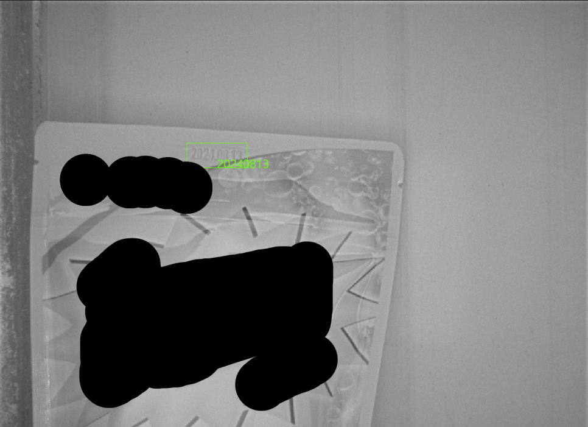

IR 돔조명
- 비닐 난반사 완화
- 각인 문자 가시성 개선
Consumer Products · AI OCR
난반사가 심한 비닐 포장재에 IR 돔조명과 AI 기반 위치 검출·OCR을 적용한 생산일자 자동검사 사례
비닐 포장된 세제 제품에 각인된 생산일자를 자동으로 판독하고 날짜가 정상적인 위치에 표시됐는지까지 함께 검사한 머신비전 프로젝트입니다. 비닐 표면의 강한 난반사와 낮은 문자 대비 때문에 일반적인 촬영조건에서는 각인 문자를 안정적으로 확보하기 어려웠으며, 여러 조명을 비교한 뒤 IR 돔조명을 적용해 문자 영상 품질을 개선했습니다. 이후 AI 기반 문자 위치 검출과 AI OCR을 순차적으로 적용해 제품 위치와 날짜 위치의 편차에 대응하는 2단계 검사 시스템을 구성했습니다.

Project Summary
01 · Overview
생산일자 검사는 단순히 문자가 존재하는지 확인하는 것만으로 끝나지 않는 경우가 많습니다. 이번 프로젝트의 검사 대상은 비닐 포장된 세제 제품으로, 포장재에 각인된 생산일자를 머신비전으로 자동 검사해야 했습니다.
현장에서는 생산일자의 문자 내용뿐 아니라 날짜가 정상적인 영역에 각인됐는지도 함께 확인해야 했습니다. 실제 제품에서는 비닐 표면의 강한 난반사, 각인 문자의 낮은 명암 대비, 제품 위치 변화, 다양한 제품 종류와 생산일자 위치 편차가 함께 존재했습니다.
ASPEC은 먼저 촬영 영상의 품질을 개선하기 위해 광학조건을 검토한 뒤, 확보된 영상에 AI 기반 위치 검출과 AI OCR을 순차적으로 적용하는 방식으로 검사 시스템을 구성했습니다.
02 · Problem
OCR은 카메라에 입력된 영상에서 문자 특징을 분석하기 때문에 문자 자체가 반사광에 묻히거나 배경과의 대비가 충분하지 않으면 소프트웨어 설정만으로 안정적인 판독 결과를 만들기 어렵습니다.
이번 제품은 표면 반사가 강하고 각인 문자 대비가 낮았으며 제품과 생산일자의 위치도 조금씩 달라졌습니다. 따라서 OCR 설정과 판독만으로 접근하지 않고 광학조건 확보, 생산일자 영역 검출, 각인 위치 검사, AI OCR 순서로 문제를 분리했습니다.
03 · System
여러 광학조건을 실제 제품에 적용해 비교한 결과 이번 세제 포장재와 각인 방식에서는 IR 돔조명이 가장 적합한 촬영환경을 만들 수 있었습니다. 먼저 반사 영향을 완화하고 문자 특징을 확보한 뒤 AI로 생산일자 영역을 검출하고, 검출 위치가 허용범위 안에 있는지 확인한 다음 AI OCR로 문자를 판독했습니다.
이 프로젝트는 광학과 AI를 분리하지 않고 OPTICS, POSITION AI, AI OCR을 하나의 검사 흐름으로 구성한 사례입니다.
04 · Inspection
비닐 포장재는 조명 방향과 제품 표면 상태에 따라 특정 영역에서 강한 반사가 발생하기 쉽습니다. 반사광이 생산일자 영역과 겹치면 문자 획이 사라지거나 배경과의 명암 차이가 줄어들 수 있습니다.
이번 프로젝트에서는 단순히 더 밝은 조명을 선택하지 않고 세제 비닐의 반사 특성과 각인 문자가 잘 드러나는 촬영조건을 찾기 위해 여러 광학조건을 실제 제품에 적용해 비교했습니다.
05 · Inspection
여러 광학조건을 실제 제품에 적용해 비교한 결과 이번 제품에서는 IR 돔조명이 가장 적합한 촬영환경을 만들 수 있었습니다. 돔 형태의 조명은 넓은 방향에서 확산된 빛을 공급해 특정 방향에 집중되는 반사를 완화하는 데 유리할 수 있습니다.
이번 제품에서는 IR 조명을 적용했을 때 가시광 조건에서 잘 드러나지 않던 각인 문자의 특징을 보다 명확하게 확보할 수 있었습니다. 이는 이번 세제 포장재와 각인 방식에서 비교한 결과이며 다른 모든 비닐 OCR 검사에 일반화할 수 있는 조건은 아닙니다.
06 · Inspection
이번 프로젝트는 제품의 위치와 생산일자의 각인 위치가 항상 완전히 동일하지 않았습니다. 이미지의 고정 좌표만 잘라 OCR에 전달하는 방식보다 먼저 실제 생산일자가 존재하는 영역을 찾아야 했습니다.
첫 번째 AI 단계에서 생산일자가 표시된 영역을 검출하고 날짜 영역의 위치를 확인했습니다. 이를 통해 실제 생산환경에서 발생하는 정상 범위의 제품 위치 변화에 대응하며 후속 OCR 검사를 수행할 수 있도록 구성했습니다.
07 · Inspection
이번 시스템은 생산일자 문자를 읽는 것만이 목적이 아니었습니다. 생산일자가 정상적인 내용으로 표시되어 있어도 각인 위치가 기준에서 벗어나면 별도의 품질 문제가 될 수 있었습니다.
첫 번째 AI 단계에서 검출한 날짜 영역을 이용하여 날짜가 허용 범위보다 위쪽 또는 아래쪽에 있거나 한쪽으로 편향되는 위치 이상을 함께 확인하도록 구성했습니다.
생산일자 내용이 맞는가?
정상적인 위치에 각인됐는가?
08 · Inspection
위치 검출 단계에서 실제 생산일자 영역을 찾은 뒤 두 번째 단계에서 AI OCR을 이용해 문자를 판독합니다. 제품 전체 영상에서 바로 문자를 읽는 것이 아니라 먼저 필요한 영역을 찾은 다음 해당 영역의 문자에 집중하도록 검사 단계를 분리했습니다.
AI OCR은 실제 생산에 사용되는 숫자, 문자와 기호 패턴을 학습 데이터에 반영하여 필요한 생산일자를 인식하도록 구성했습니다. 제공 자료에 없는 인식률이나 학습 이미지 수는 표시하지 않았습니다.
09 · 2-Step AI
이번 프로젝트는 AI OCR 하나만 적용한 구성이 아닙니다. 첫 번째 AI 단계에서 생산일자 영역을 찾고 각인 위치를 검사한 뒤, 두 번째 AI 단계에서 해당 영역의 문자를 판독합니다.
생산일자 내용과 각인 위치를 분리해 검사하고 마지막에 두 결과를 종합 판정하도록 구성했습니다. 정확한 처리시간과 인식률 수치는 제공되지 않아 표시하지 않았습니다.
10 · Position Variation
생산라인에서 제품 위치가 일정하지 않으면 이미지상의 생산일자 위치 역시 함께 이동할 수 있습니다. 고정된 OCR 영역만 사용할 경우 이러한 위치 변화가 판독 안정성에 영향을 줄 수 있습니다.
이번 시스템에서는 제품 전체 이미지에서 생산일자 영역을 먼저 검출한 뒤 해당 결과를 기준으로 OCR 영역을 결정했습니다. 실제 생산환경에서 발생하는 정상 범위의 제품 위치 변화에 대응하도록 구성한 것이며 검증 범위를 벗어난 모든 위치를 의미하지 않습니다.
11 · Optics + AI
이번 프로젝트는 AI 알고리즘만 적용하여 해결한 사례가 아닙니다. AI가 사용할 입력 영상 자체가 불안정하면 학습과 추론 성능 역시 영향을 받을 수 있습니다.
ASPEC은 광학조건을 먼저 안정화하고 그 위에 AI 검사를 적용하는 순서로 시스템을 구성했습니다. Optical Engineering과 AI Vision을 함께 설계해야 하는 이유가 잘 드러나는 프로젝트입니다.
12 · Result
AI OCR을 이용하여 각인된 생산일자의 문자를 자동으로 판독하도록 구성했습니다.
문자 내용뿐 아니라 생산일자가 설정된 위치 범위 안에 표시됐는지도 함께 검사합니다.
IR 돔조명으로 비닐 포장재의 반사를 완화하고 각인 문자가 검사에 적합하게 보이도록 광학조건을 개선했습니다.
AI 위치 검출과 AI OCR을 순차 적용해 위치 변화가 있는 환경에서도 생산일자 영역을 찾아 검사합니다.
13 · OCR Optics
OCR 성능은 소프트웨어만으로 결정되지 않습니다. 비닐, 필름, 광택 포장재, 투명 재질, 각인 문자와 저대비 인쇄처럼 반사와 대비 문제가 있는 대상은 카메라가 어떤 영상을 취득하는지가 OCR 결과에 큰 영향을 줍니다.
이번 프로젝트에서는 일반적인 촬영조건보다 IR 돔조명을 이용한 광학 구성이 각인 문자를 확보하는 데 적합했고, 해당 영상 위에 AI 위치 검출과 OCR을 적용했습니다.
14 · Engineering
생산일자 OCR 프로젝트에서는 문자가 한 번 읽히는 것보다 실제 생산라인의 다양한 조건에서 지속적으로 판독할 수 있는 구조를 만드는 것이 중요합니다.
ASPEC은 실제 제품 샘플을 기준으로 문자 형태, 각인 방식, 제품 재질과 난반사, 제품 Variation, 문자 위치, 검사속도, 설치공간, 광학조건과 OCR 방식을 함께 검토합니다.
이번 세제 비닐 포장 프로젝트에서는 광학조건과 날짜 위치 변화가 검사 안정성을 좌우했기 때문에 IR 돔조명과 2단계 AI 검사 구조를 적용했습니다.
08 · Related Cases
생산일자 OCR은 문자 인식 알고리즘만으로 해결되지 않는 경우가 많습니다. 비닐·필름처럼 반사가 강한 제품이나 각인 문자의 대비가 낮은 환경에서는 광학조건과 문자 위치 변화까지 함께 검토해야 합니다. 실제 제품 샘플, 문자 형태, 생산속도, FOV와 WD를 알려주시면 조명 테스트부터 위치 검출, AI OCR까지 생산환경에 맞는 검사 방식을 검토해드립니다.